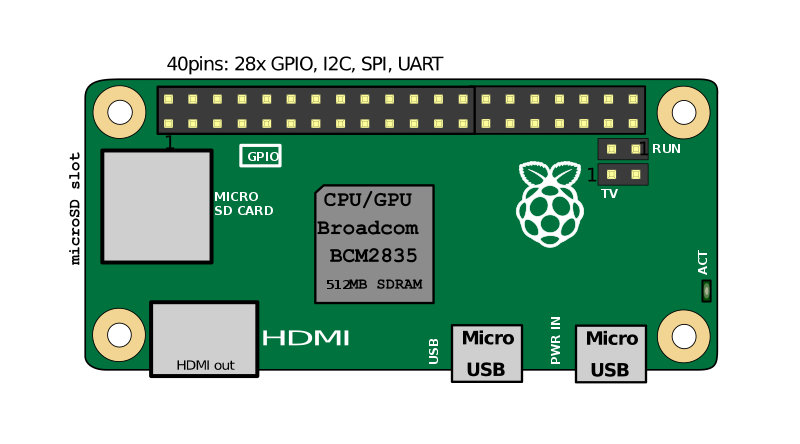

The Raspberry Pi hardware has evolved through several versions that feature variations in memory capacity and peripheral-device support.
Processor:
The Broadcom BCM2835 SoC used in the first generation Raspberry Pi is somewhat equivalent to the chip used in first generation smartphones (its CPU is an older ARMv6 architecture), which includes a 700 MHz ARM1176JZF-S processor, VideoCore IV graphics processing unit (GPU), and RAM. It has a level 1 (L1) cache of 16 KB and a level 2 (L2) cache of 128 KB. The level 2 cache is used primarily by the GPU. The SoC is stacked underneath the RAM chip, so only its edge is visible.
The Raspberry Pi 2 uses a Broadcom BCM2836 SoC with a 900 MHz 32-bit quad-core ARM Cortex-A7 processor (as do many current smartphones), with 256 KB shared L2 cache.
The Raspberry Pi 3 uses a Broadcom BCM2837 SoC with a 1.2 GHz 64-bit quad-core ARM Cortex-A53 processor, with 512 KB shared L2 cache.
Performance:
The Raspberry Pi 3, with a quad-core Cortex-A53 processor, is described as 10 times the performance of a Raspberry Pi 1. This was suggested to be highly dependent upon task threading and instruction set use. Benchmarks showed the Raspberry Pi 3 to be approximately 80% faster than the Raspberry Pi 2 in parallelized tasks.
Raspberry Pi 2 includes a quad-core Cortex-A7 CPU running at 900 MHz and 1 GB RAM. It is described as 4-6 times more powerful than its predecessor. The GPU is identical to the original. In parallelized benchmarks, the Raspberry Pi 2 could be up to 14 times faster than a Raspberry Pi 1 Model B+.
While operating at 700 MHz by default, the first generation Raspberry Pi provided a real-world performance roughly equivalent to 0.041 GFLOPS. On the CPU level the performance is similar to a 300 MHz Pentium II of 1997-99. The GPU provides 1 Gpixel/s or 1.5 Gtexel/s of graphics processing or 24 GFLOPS of general purpose computing performance. The graphical capabilities of the Raspberry Pi are roughly equivalent to the performance of the Xbox of 2001.
RAM:
On the older beta Model B boards, 128 MB was allocated by default to the GPU, leaving 128 MB for the CPU. On the first 256 MB release Model B (and Model A), three different splits were possible.
The default split was 192 MB (RAM for CPU), which should be sufficient for standalone 1080p video decoding, or for simple 3D, but probably not for both together. 224 MB was for Linux only, with only a 1080p framebuffer, and was likely to fail for any video or 3D. 128 MB was for heavy 3D, possibly also with video decoding (e.g. XBMC). Comparatively the Nokia 701 uses 128 MB for the Broadcom VideoCore IV.
For the new Model B with 512 MB RAM initially there were new standard memory split files released( arm256_start.elf, arm384_start.elf, arm496_start.elf) for 256 MB, 384 MB and 496 MB CPU RAM (and 256 MB, 128 MB and 16 MB video RAM). But a week or so later the RPF released a new version of start.elf that could read a new entry in config.txt (gpu_mem=xx) and could dynamically assign an amount of RAM (from 16 to 256 MB in 8 MB steps) to the GPU, so the older method of memory splits became obsolete, and a single start.elf worked the same for 256 and 512 MB Raspberry Pis.
The Raspberry Pi 2 and the Raspberry Pi 3 have 1 GB of RAM. The Raspberry Pi Zero and Zero W have 512 MB of RAM.
Netwroking:
The Model A, A+ and Pi Zero have no Ethernet circuitry and are commonly connected to a network using an external user-supplied USB Ethernet or Wi-Fi adapter. On the Model B and B+ the Ethernet port is provided by a built-in USB Ethernet adapter using the SMSC LAN9514 chip. The Raspberry Pi 3 and Pi Zero W (wireless) are equipped with 2.4 GHz WiFi 802.11n (150 Mbit/s) and Bluetooth 4.1 (24 Mbit/s) based on Broadcom BCM43438 FullMAC chip with no official support for Monitor mode but implemented through unofficial firmware patching and the Pi 3 also has a 10/100 Ethernet port.
Peripherals:
The Raspberry Pi may be operated with any generic USB computer keyboard and mouse. It may also be used with USB storage, USB to MIDI converters, and virtually any other device/component with USB capabilities.
Other peripherals can be attached through the various pins and connectors on the surface of the Raspberry Pi.
Real-time clock:
None of the current Raspberry Pi models have a built-in real-time clock, so they are unable to keep track of the time of day independently. As a workaround, a program running on the Pi can retrieve the time from a network time server or from user input at boot time, thus knowing the time while powered on. To provide consistency of time for the file system, the Pi does automatically save the time it has on shutdown, and re-installs that time at boot. A real-time hardware clock with battery backup, such as the DS1307, which is fully binary coded, may be added (often via the I²C interface).
General purpose input-output (GPIO) connector:
Raspberry Pi 1 Models A+ and B+, Pi 2 Model B, Pi 3 Model B and Pi Zero (and Zero W) GPIO J8 have a 40-pin pinout. Models A and B have only the first 26 pins. Model B rev. 2 also has a pad (called P5 on the board and P6 on the schematics) of 8 pins offering access to an additional 4 GPIO connections. Models A and B provide GPIO access to the ACT status LED using GPIO 16. Models A+ and B+ provide GPIO access to the ACT status LED using GPIO 47, and the power status LED using GPIO 35.
Accessories:
Camera - On 14 May 2013, the foundation and the distributors RS Components and Premier Farnell/Element 14 launched the Raspberry Pi camera board alongside a firmware update to accommodate it. The camera board is shipped with a flexible flat cable that plugs into the CSI connector which is located between the Ethernet and HDMI ports. In Raspbian, the user must enable the use of the camera board by running Raspi-config and selecting the camera option. The cost of the camera module is 20 euros in Europe (9 September 2013). It can produce 1080p, 720p and 640x480p video. The dimensions are 25 mm x 20 mm x 9 mm. In May 2016, v2 of the camera came out, and is an 8 megapixel camera. model al camerei, cu un senzor de 8 megapixeli.
Infrared Camera - In October 2013, the foundation announced that they would begin producing a camera module without an infrared filter, called the Pi NoIR.
HAT (Hardware Attached on Top) expansion boards - Together with the Model B+, inspired by the Arduino shield boards, the interface for HAT boards was devised by the Raspberry Pi Foundation. Each HAT board carries a small EEPROM (typically a CAT24C32WI-GT3) containing the relevant details of the board, so that the Raspberry Pi's OS is informed of the HAT, and the technical details of it, relevant to the OS using the HAT. Mechanical details of a HAT board, that use the four mounting holes in their rectangular formation, are available online.
-Location of connectors and main ICs-